Say it, then watch it get made
The agent trims pauses and retakes, writes captions, adds titles and motion, and lays the sound underneath. You type a request like this one.
cut the pauses and retakes, add captions
ZKidz Studio is an open-source video editor that runs on your own computer. Drop in your footage and say what you want in plain words. An AI agent cuts it, captions it and renders it while you watch.
One sentence in, a finished short out. Every step happens on your machine and shows up in the preview and timeline as it lands.
The agent trims pauses and retakes, writes captions, adds titles and motion, and lays the sound underneath. You type a request like this one.
cut the pauses and retakes, add captions
These run on the export. A master that fails one does not get copied out.
Each deliverable is hashed while it is copied, and the SHA-256 is listed on the Render screen. 4K renders on NVIDIA today; other backends render 1080.
Ask for a change and the preview updates right away. Go back to any earlier version when you want to.
The only outside traffic is the calls to Claude and the downloads setup makes. Bring an API key, your cloud, or your own Claude Code login.
zks doctor tests each backend by encoding real frames, then uses the first one that works. Every feature has a CPU path.
From a sentence to a checked export, in five steps.
Drop in footage and type what you want, in plain words.
Watches the recording and plans the edit: cuts, captions, titles and sound.
The plan runs through the app's own tools, so each change lands in the timeline while you watch.
Renders on your machine with the first video backend that works, down to plain CPU.
Eleven checks run on the export. Then you get the master, the Reels cut and the covers.
ZKidz Studio grew out of a pipeline that has shipped 40+ edits. These are the covers from that channel.

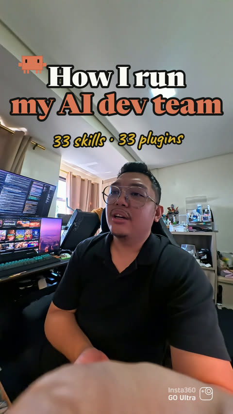
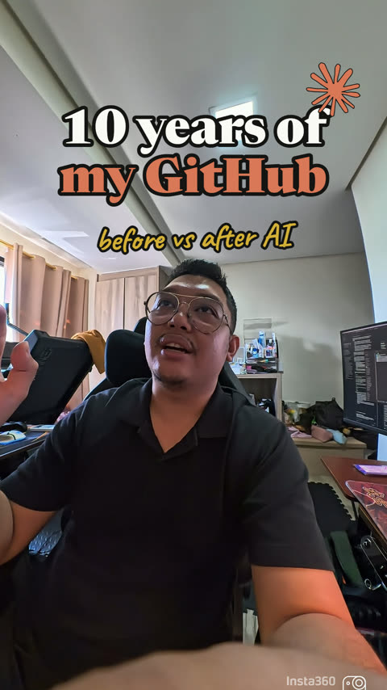

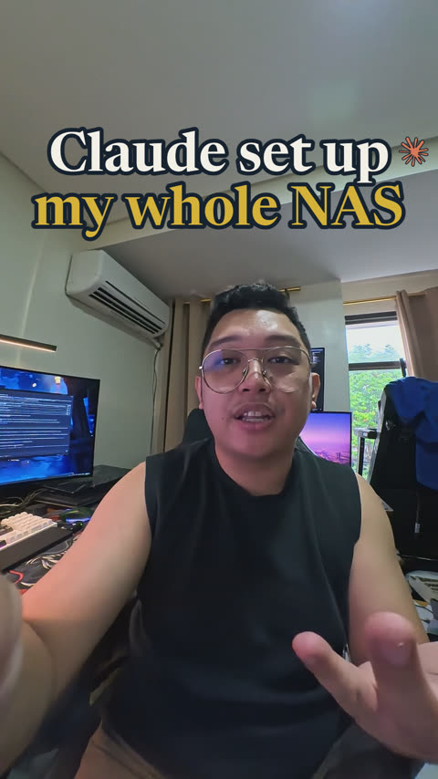
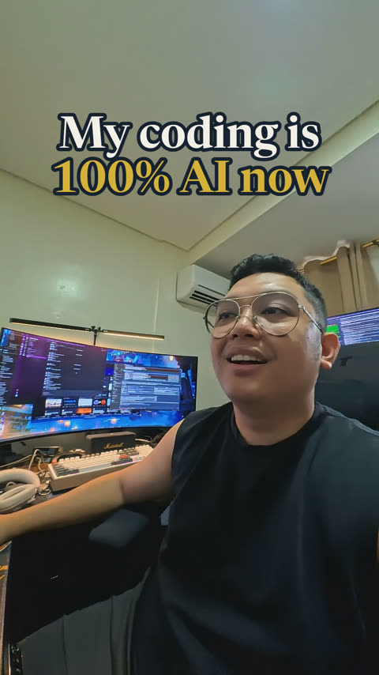
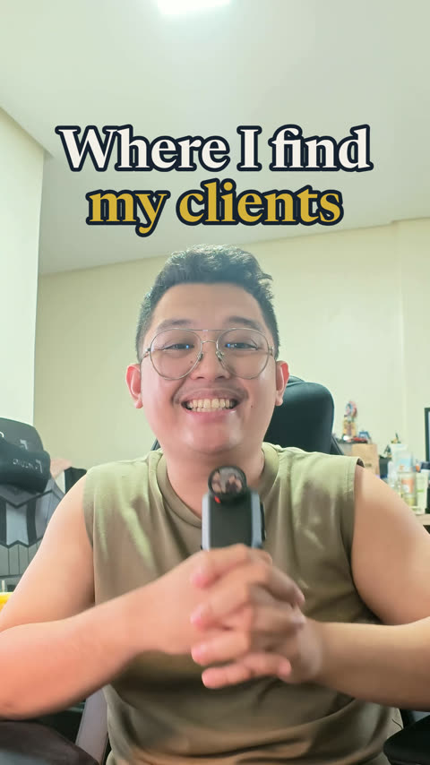

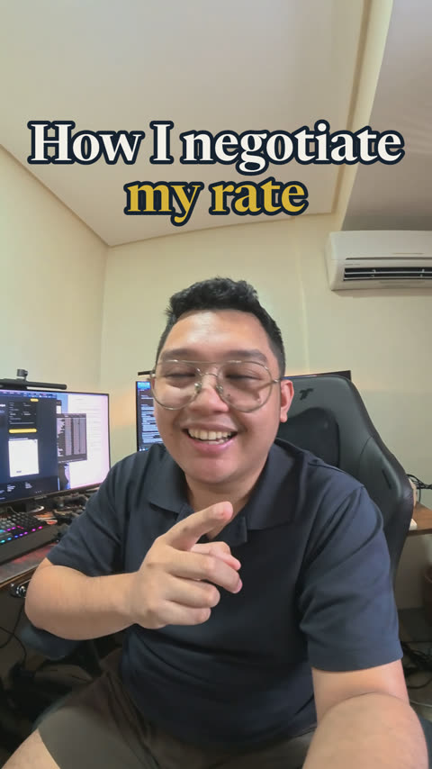

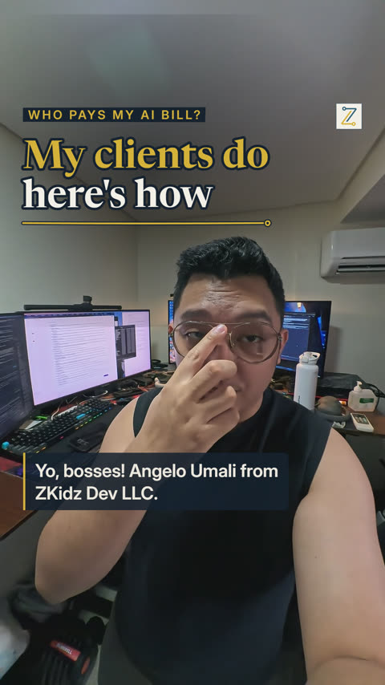

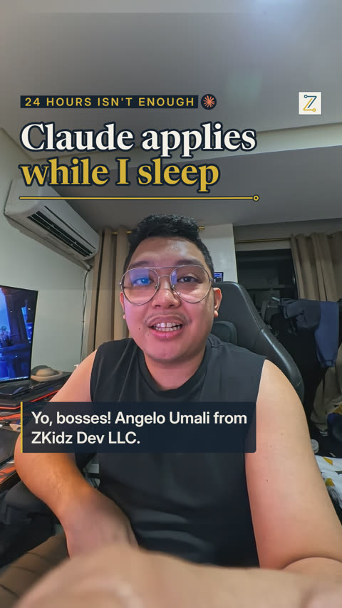
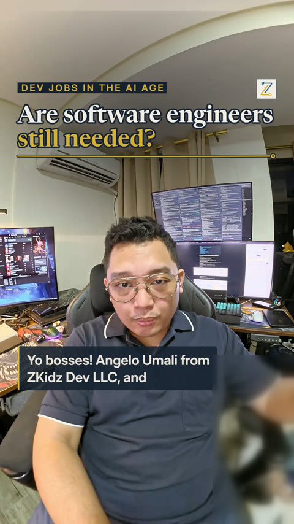
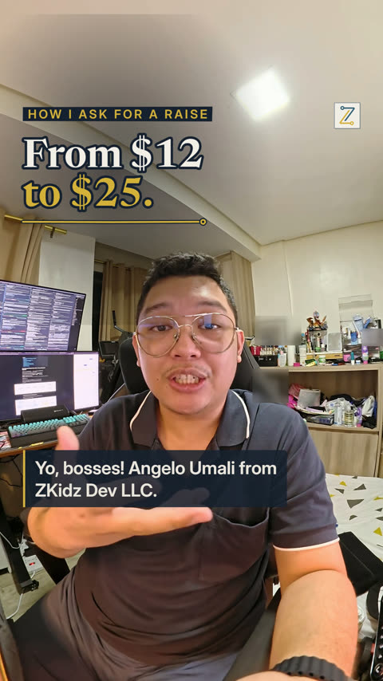
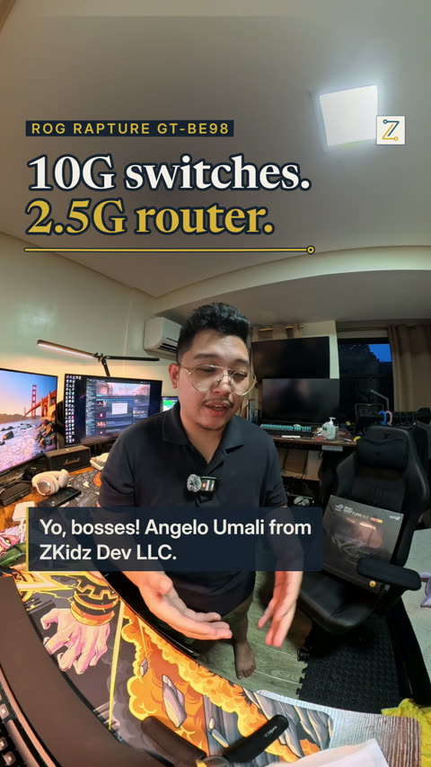
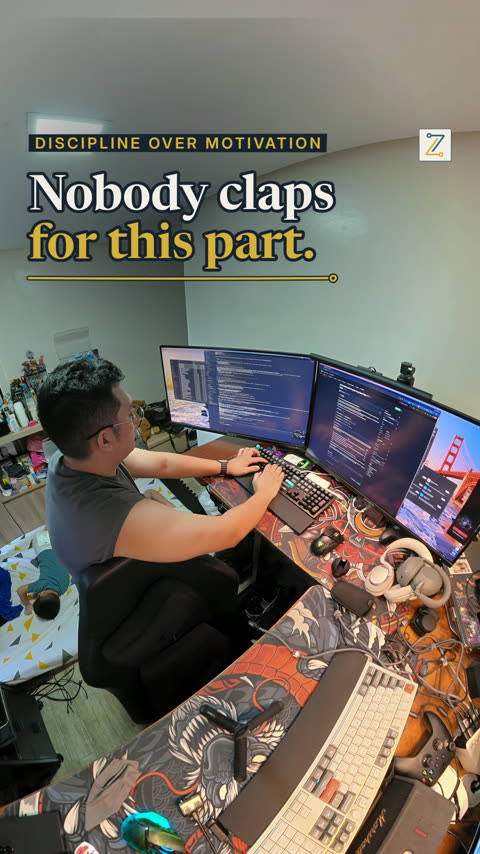
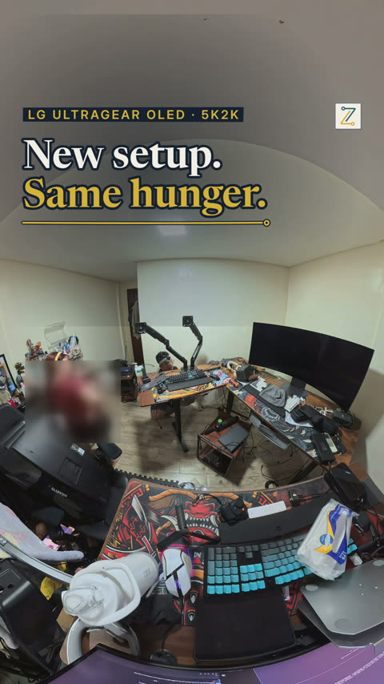
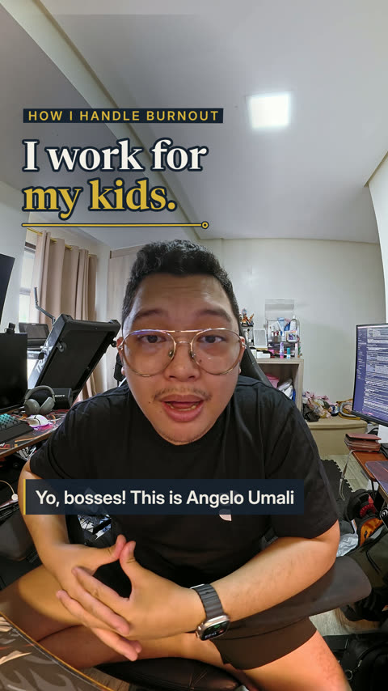
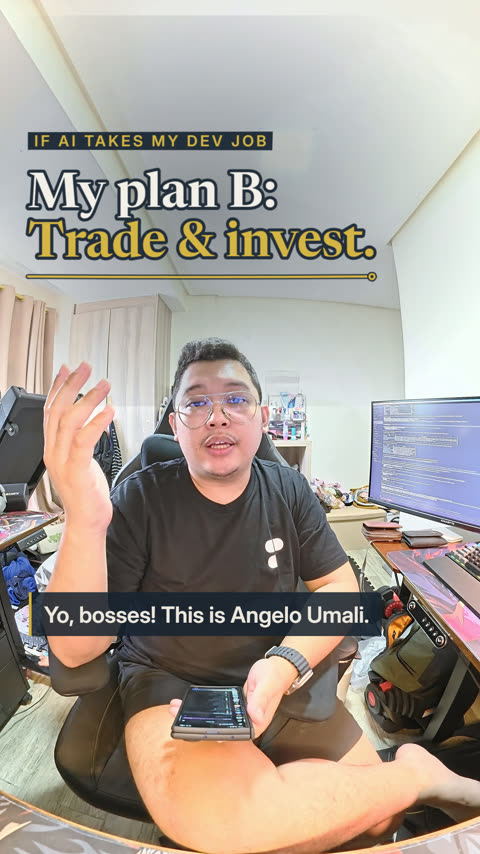
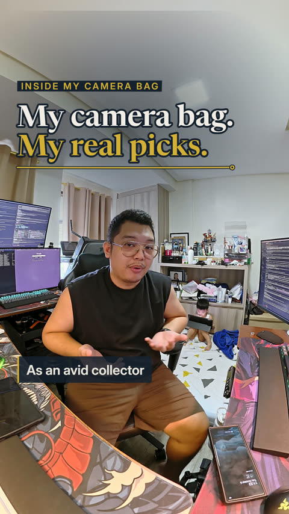
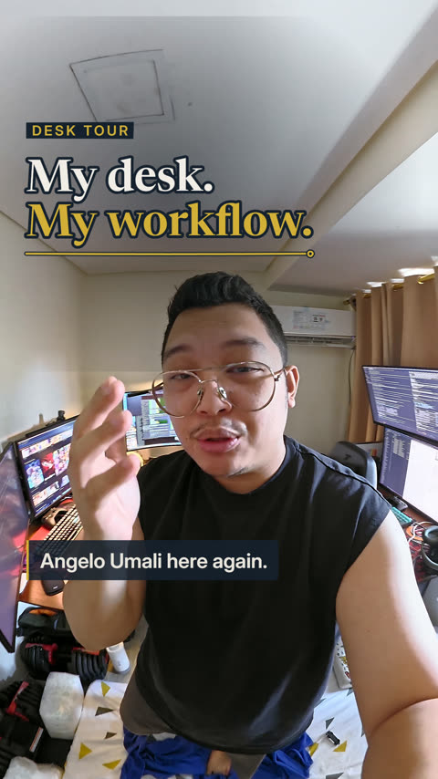
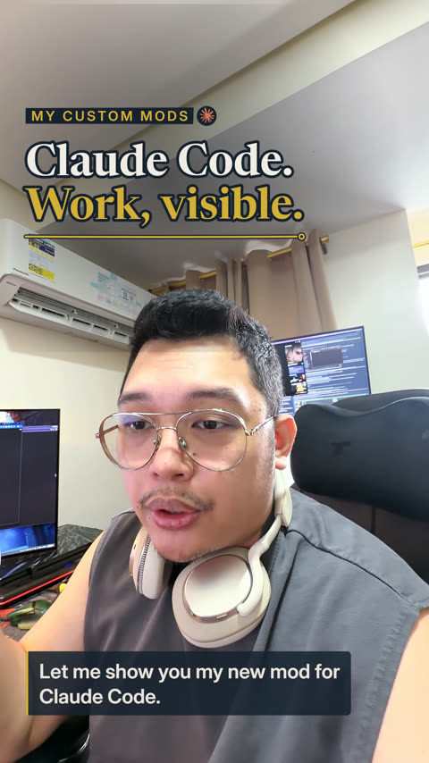
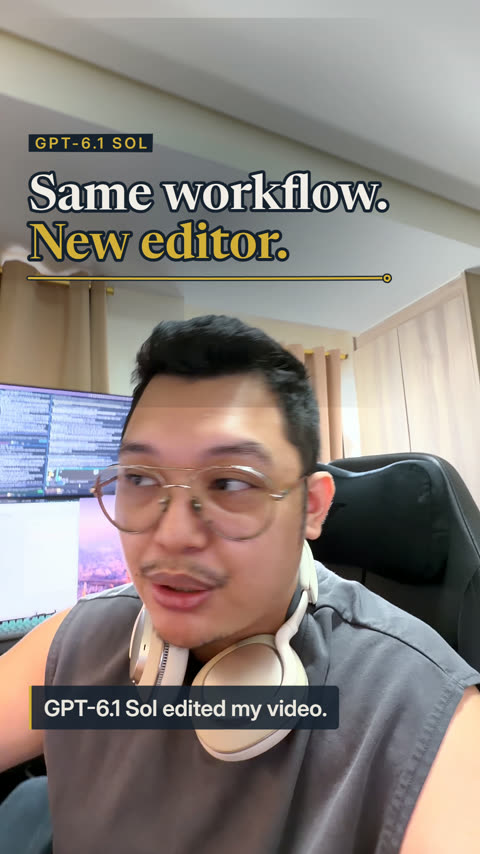
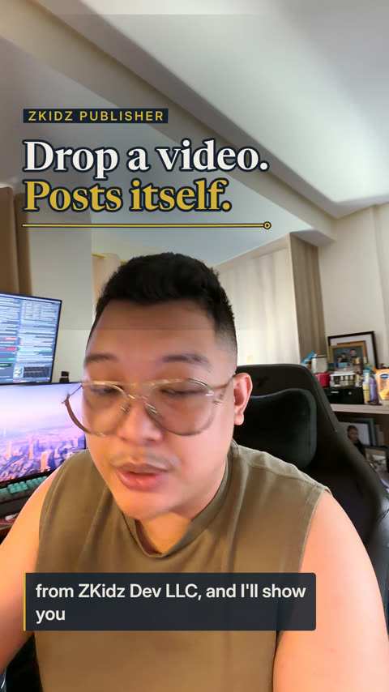
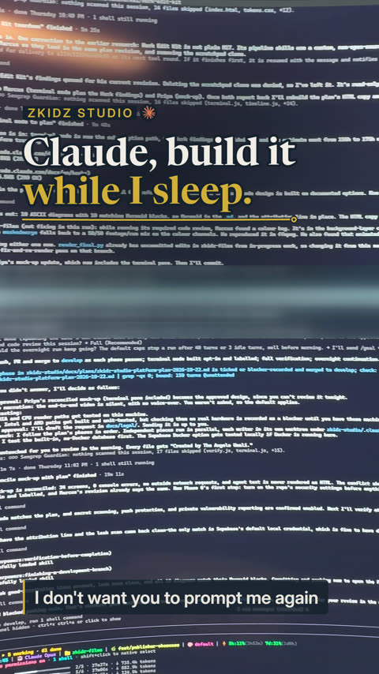
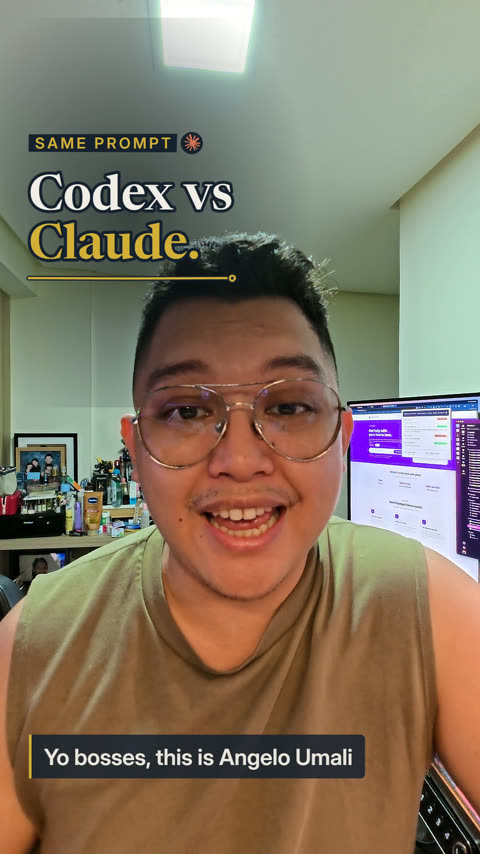
Episode 12, "Who pays my AI subscriptions?", was edited in the studio. Its master passed 11 of 11 quality checks.

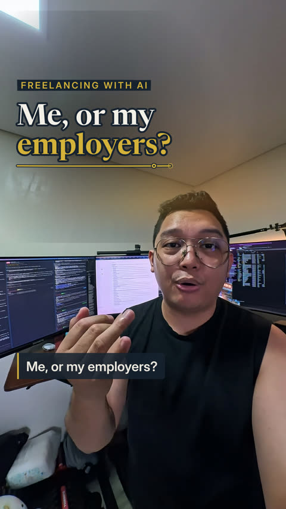
Pick one of three ways to reach Claude. You can switch later.
The key is stored in your OS keychain, and only its last four characters are ever shown.
It uses your cloud CLI's own sign-in. The app stores no cloud secret.
Off until you turn it on. It runs the unmodified claude program in a terminal pane.
The app never offers "Sign in with Claude" and never accepts a pasted token or credential file. Read the details.
One command per OS. It installs the pinned tools, runs setup, then starts the app.
git clone https://github.com/theangeloumali/zkidz-studio && cd zkidz-studio && ./setup.shgit clone https://github.com/theangeloumali/zkidz-studio; cd zkidz-studio
powershell -ExecutionPolicy Bypass -File .\setup.ps1Then run pnpm start and open http://127.0.0.1:4317. The server listens on loopback only.
You need Linux x64 or arm64, macOS on Apple silicon, or Windows 10/11, plus 20 GB of free disk, git and curl. Setup downloads the rest and checks
each download's SHA-256. On WSL, keep the repo and your media in the Linux home, not under /mnt.
The user guides live in the repository.